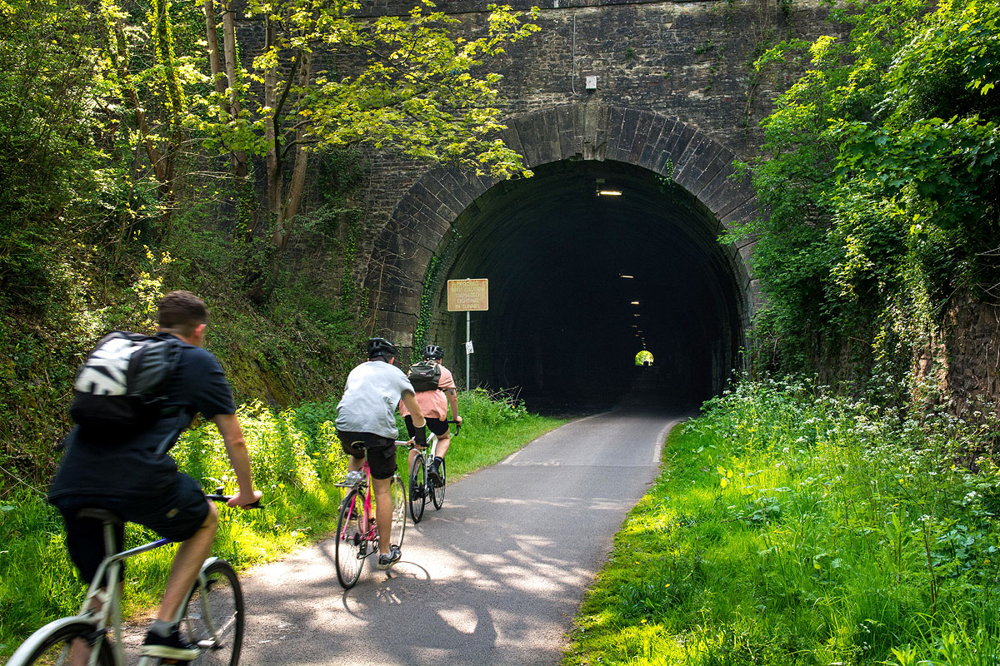

Scenic Routes
-

Leigh Woods
This Scenic route is considered an easy bike ride. Suitable fro families. Walkers, Dogs and Children to be expected please ride cautiously.
-

Stample Hill Tunnel
This scenic route is considered an easy bike ride. This route is mostly paved and suitable for all skills levels. Cycling not permitted: 438 yards in total (you will need to dismount and push your bike)
please choose your starting place first